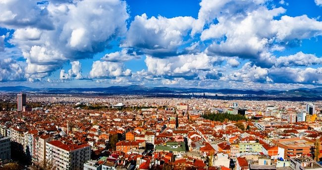

-
BURSA
-
iSTANBUL
-
AYDIN

Bursa, Türkiye'nin bir ili ve en kalabalık dördüncü şehri.
2021 itibarıyla 3.139.744[2] nüfusa sahiptir.
2016 Dünya Yaşanabilir Şehirler sıralamasında Dünya'da 28.
Türkiye'de 1. sırada yer almaktadır.
Marmara Bölgesinin Güney Marmara bölümünde, 40° batı boylam ve
29° kuzey enlem daireleri arasında yer alır. Eski adı Hüdavendigâr'dır.
Kuzeyinde Marmara Denizi ve Yalova, kuzeydoğuda Kocaeli ve Sakarya,
doğuda Bilecik, güneyde Kütahya ve batıda Balıkesir illeri ile çevrilidir.

İstanbul, Türkiye'de Marmara Bölgesi'nde yer alan şehir ve Türkiye Cumhuriyeti Devletinin 81 ilinden biridir.
Ülkenin nüfus bakımından en çok göç alan ve en kalabalık ilidir.
Ekonomik, tarihî ve sosyo-kültürel açıdan önde gelen şehirlerden biridir.
Şehir, iktisadi büyüklük açısından dünyada 34. sırada yer alır.
Nüfuslarına göre şehirler listesinde belediye sınırları göz önüne alınarak yapılan sıralamaya göre Avrupa'da birinci, dünyada ise altıncı sırada yer almaktadır.
Aydın, Türkiye'nin bir ili ve en kalabalık yirminci şehridir.
Ege Bölgesi'nde yer alan, turizm ve tarım açısından en gelişmiş illerdendir.
Kuzeyinde İzmir, kuzeydoğusunda Manisa, doğusunda Denizli, güneyinde Muğla illeri,
batısında Ege Denizi bulunmaktadır.
2020 itibarıyla 1.119.084 kişilik nüfusuyla Ege Bölgesi'nin üçüncü büyük ilidir.
17 ilçesi vardır.